DGV-Suite: A Benchmark Suite of Task-Specific Subsets for Dairy Goat Vision
1Northwest A&F University, Yang ling, Shaanxi, China
2Mohamed bin Zayed University of Artificial Intelligence, Abu Dhabi, UAE
3Harbin Institute of Technology, Shen Zhen, Guangdong, China
Dataset Overview
DGV-Suite is organized as task-specific subsets under a unified benchmark framework for dairy goat visual understanding.
Abstract
Dairy goats have attracted increasing attention recently due to their nutritional and economic importance, as well as their growing role in global livestock production. Meanwhile, computer vision and intelligent multimedia analysis have shown strong potential for improving dairy goat management by enabling automated monitoring, behavior understanding, and fine-grained decision support in practical farming environments. However, existing dairy goat datasets are typically small in scale, task-isolated, and collected under constrained conditions, making them insufficient for intelligent multimedia analysis in realistic farming environments. To address this gap, we present DGV-Suite, a large-scale benchmark suite for dairy goat vision, organized as multiple task-specific subsets under a standardized benchmark framework, containing 32,007 images and 1,459 videos collected from authentic farm environments, covering diverse conditions of illumination, occlusion, and inter-animal interaction. The benchmark supports eight representative tasks, including object detection, instance segmentation, semantic segmentation, object tracking, pose estimation, behavior recognition, individual identification, and image generation; it provides task-specific subsets for diverse dairy goat visual understanding scenarios. We further establish benchmark settings and report baseline results on six supervised tasks using representative models, confirming the practical application challenges and benchmark value of DGV-Suite, which provides a valuable resource for advancing future research in precision livestock farming, dairy goat scene understanding, and intelligent multimedia analysis.
Dataset & Annotation
Farm Environment
The data were collected at a large-scale dairy goat research and teaching farm in northwestern China, featuring semi-open indoor barns and outdoor exercise areas. This indoor-outdoor integrated semi-open housing structure represents a typical model for large-scale dairy goat breeding in the temperate regions of northwest China, featuring strong regional representativeness.
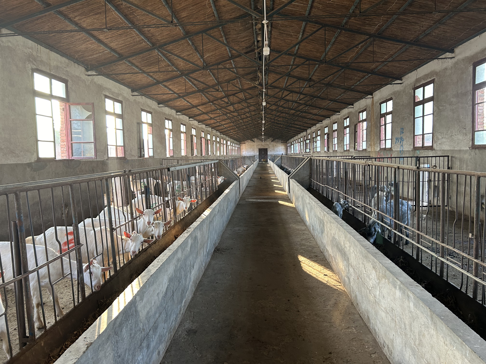
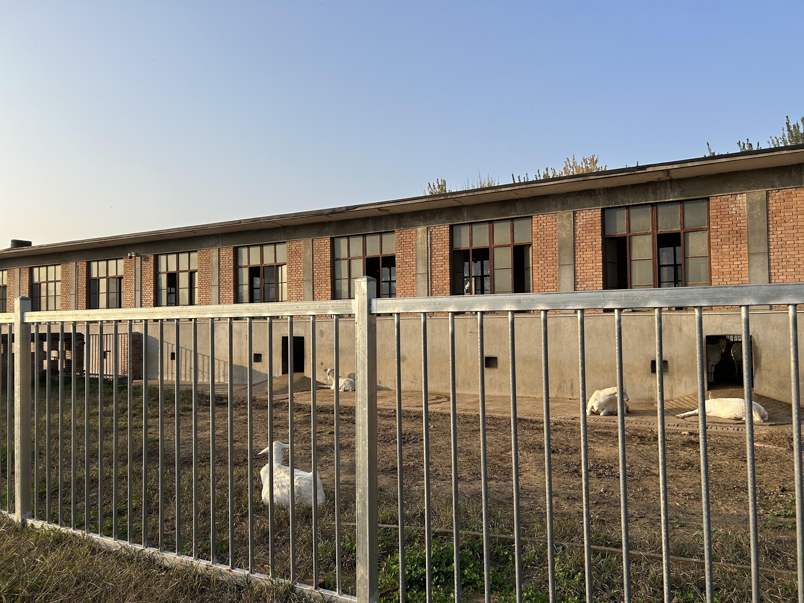
Indoor farm environment
The indoor barn is a regular rectangular structure, measuring approximately 50 meters in length, 10 meters in width and 5 meters in height, providing a spacious and well-ventilated space suitable for daily management of large-scale breeding. A central passage runs through the middle of the barn, dividing the interior space into two symmetrical sections, with multiple independent pens separated by iron fences on both sides. Each pen is equipped with a dedicated small gate that connects directly to the outdoor activity area, allowing goats to move freely between indoor and outdoor spaces and choose resting or active areas independently. Above each gate, three natural lighting windows are installed to fully introduce natural light, regulate indoor light intensity, avoid damp and dark conditions in the barn, and conform to the growth habits of dairy goats.
Outdoor farm environment
The supporting outdoor activity enclosure covers an area of roughly 25 meters in length and 5 meters in width, with a stable and safe enclosed structure. One side of the enclosure is bounded by the outer wall of the indoor barn (approximately 5 meters high), while the other three sides are enclosed by iron fences standing about 1.6 meters high. This structure not only guarantees the safety of goats during activities and prevents escape, but also ensures adequate air circulation and open vision. Special feeding troughs are placed regularly within the enclosure to provide convenient foraging access for goats, forming an integrated breeding layout of indoor resting, outdoor activities and fixed-point foraging, which fully meets the core needs of daily growth and exercise for dairy goats.
Acquisition Devices
Data acquisition was implemented using a multi-camera configuration deployed in the indoor livestock barn and the outdoor exercise yard. During the daily recording period from 09:00 to 18:30, the goat herd roamed freely within the indoor and outdoor pens, generating natural and diverse visual scenes.
Annotation Protocols
All task-specific annotations follow a unified file naming convention and hierarchical directory structure. The entire annotation team was composed of professional researchers with expertise in livestock breeding and computer vision. Multi-level quality control procedures were implemented to guarantee data reliability: cross-validation between multiple annotators to resolve labeling discrepancies, automated format checking to eliminate file errors, and random manual sampling review of labeled samples.
Pose Estimation
Each extracted frame was annotated with 17 biologically meaningful anatomical keypoints following the standard COCO format, covering the head, trunk, forelimbs, and hind limbs. Particular attention was paid to the consistency of left/right assignment, joint localization, paw positioning, and annotation behavior under partial occlusion or truncation.
Annotation Rules
- Left and right are defined from the goat's own perspective rather than from the image viewer's perspective.
- Each keypoint should be placed at the anatomically consistent landmark center whenever possible.
- For joint-type landmarks, the point should correspond to the estimated joint pivot rather than the visible contour extreme.
- For paw landmarks, the point should be placed at the distal hoof center or the main ground-contact position.
| Part | Keypoint | Operational definition | Skeleton Topology |
|---|---|---|---|
| Trunk | 1 Left eye | Center of the visible eye region, approximating the anatomical eye center. | 1 - 2; 1 - 3 |
| 2 Right eye | Center of the visible eye region, approximating the anatomical eye center. | 2 - 3 | |
| 3 Nose | Center of the snout tip at the most stable frontal nose landmark. | 3 - 4 | |
| 4 Neck | Junction region between the head and trunk, centered at the anatomically stable neck pivot. | 4 - 6; 4 - 9; 4 - 5 | |
| 5 Root of tail | Dorsal junction between the tail and the trunk. | 5 - 12; 5 - 15 | |
| Left fore limb | 6 Left shoulder | Approximate center of the shoulder joint connecting the trunk and the forelimb. | 6 - 7 |
| 7 Left elbow | Approximate center of the elbow joint on the forelimb. | 7 - 8 | |
| 8 Left front paw | Distal center of the front hoof or the main ground-contact point. | 8 - 7 | |
| Right fore limb | 9 Right shoulder | Approximate center of the shoulder joint connecting the trunk and the forelimb. | 9 - 10 |
| 10 Right elbow | Approximate center of the elbow joint on the forelimb. | 10 - 11 | |
| 11 Right front paw | Distal center of the front hoof or the main ground-contact point. | 11 - 10 | |
| Left hind limb | 12 Left hip | Approximate center of the hip joint connecting the trunk and the hind limb. | 12 - 13 |
| 13 Left knee | Approximate center of the hind-limb knee joint. | 13 - 14 | |
| 14 Left back paw | Distal center of the hind hoof or the main ground-contact point. | 14 - 13 | |
| Right hind limb | 15 Right hip | Approximate center of the hip joint connecting the trunk and the hind limb. | 15 - 16 |
| 16 Right knee | Approximate center of the hind-limb knee joint. | 16 - 17 | |
| 17 Right back paw | Distal center of the hind hoof or the main ground-contact point. | 17 - 16 |
Behavior Recognition
Strict quality control was implemented throughout the behavior-related annotation process, with emphasis on diversity of postures and challenging real-world scenarios such as body occlusion, posture deformation and multi-angle viewpoint variations. Behavior categories were defined based on three core principles: universality, authenticity and evaluability. The current taxonomy covers both common daily behaviors and rare but practically important abnormal states.
Annotation Rules
- The start time is the first frame in which the target behavior is clearly established, and the end time is the last frame before the subject changes to a different behavior or the action's semantic completeness is lost.
- The annotated behavior should be visually recognizable, semantically stable, and temporally sustained within the clip.
- When a clip contains multiple behaviors, the label is determined by the behavior occupying the main effective duration of the segment.
- Short transitions, ambiguous postural adjustments, or incomplete actions are not used as standalone labels.
| Behaviors | Behavior description |
|---|---|
| Standing | Stable quadrupedal stance with limbs erect, torso upright or slightly forward-leaning, head stationary or moving naturally, no overall body displacement, and the main torso not contacting the ground. |
| Walking | Alternating limb movement for displacement, back level, and no significant body lift. |
| Lying down | The main body fully contacting the ground, with no tendency for autonomous standing or displacement. |
| Climbing | Forelimbs supporting a higher object, hind limbs touching ground or lower object, torso non-parallel to ground. |
| Fighting | At least two goats in physical contact, butting heads mutually. |
| Paralyzing | Unable to stand independently, limbs cannot be actively flexed, extended, or used to support the body, and the head is movable. Paralyzing is not lameness but a rare condition like twitching. |
| Eating | Head actively approaches the feeding area and maintains contact. |
Detection and Tracking
Detection boxes are defined to cover the visible extent of the target as consistently as possible while preserving semantic completeness. In crowded scenes, adjacent goats are annotated as separate instances whenever their visible regions can be reliably distinguished. For tracking, the same target is assigned a temporally consistent trajectory across consecutive frames. Head or body targets are selected according to visibility, interaction pattern, and tracking suitability, with the goal of preserving stable target identity throughout the sequence.
Ambiguity Handling
- In detection, heavily truncated, extremely blurred, or visually indiscernible targets are excluded from annotation when reliable localization is not possible.
- In tracking, temporary occlusion is tolerated as long as the target identity can still be reasonably maintained across frames. When identity continuity cannot be reliably preserved because of severe overlap, abrupt disappearance, or prolonged occlusion, the corresponding segment is treated conservatively to reduce annotation noise.
Format Information
- Detection format: PASCAL VOC
- Tracking format: VOT sequence annotation
- Detection target: Dairy goat instance
- Tracking target: Head or body target, depending on visibility and interaction pattern
Segmentation Tasks
For instance segmentation, each goat is annotated as an independent instance whenever it can be reliably distinguished from neighboring animals. Polygon masks follow visible contours while preserving semantic completeness, and severely truncated, blurred, or indiscernible regions are excluded. Overlapping instances are separated conservatively based on visible evidence.
For semantic segmentation, pixels are assigned to predefined semantic regions rather than individual identities. The annotation process emphasizes category consistency, region continuity, and interpretability in complex farm scenes. Ambiguous boundaries are resolved by dominant semantic class and consistency rules, while unreliable regions are treated conservatively.
Format Information
- Instance segmentation format: COCO polygon / mask annotations
- Semantic segmentation format: Pixel-level semantic region labels
- Instance segmentation target: Individual dairy goat instances
- Semantic segmentation target: Predefined semantic regions in farm scenes
Identification and Generation
For identification, the subset is organized to maximize intra-identity diversity while preserving strong inter-identity similarity. Images from the same goat may differ substantially in pose and viewpoint, whereas images from different goats may still appear visually similar.
For generation, the subset is curated to retain visually usable and semantically meaningful samples. Attribute-based organization by scene type, coat color, and posture provides controllable factors for generative modeling without requiring explicit geometric annotation.
Data Curation Rules
- In the identification subset, visually invalid samples caused by severe occlusion, extreme blur, or unreliable identity assignment are excluded to preserve label reliability.
- In the generation subset, samples with severe blur, low contrast, or strong visual obstruction are removed during manual curation to improve visual quality and downstream usability. Attribute assignment is performed conservatively to reduce ambiguity and maintain subset consistency.
DGV-Suite Subset Structure
DGV-Suite/
- detection/ # 3,430 images, 8,216 instances
- instance_segmentation/ # 3,100 images, 5,572 instances
- semantic_segmentation/ # 1,829 images, pixel-level masks
- tracking/ # 65 head videos + 135 body videos
- pose_estimation/ # 5,268 images, 17 keypoints
- behavior_recognition/ # 1,259 videos, 7 classes
- identification/ # 15,380 images, 159 goats
- image_generation/ # 3,000 imagesExamples
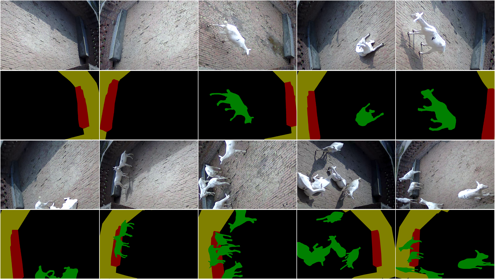
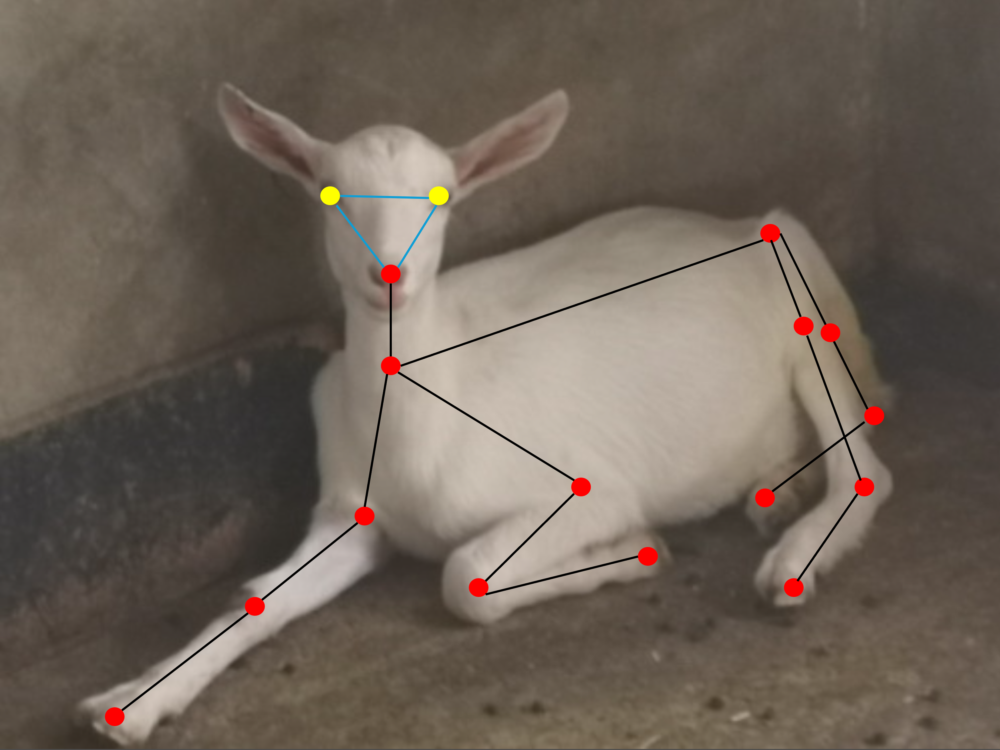
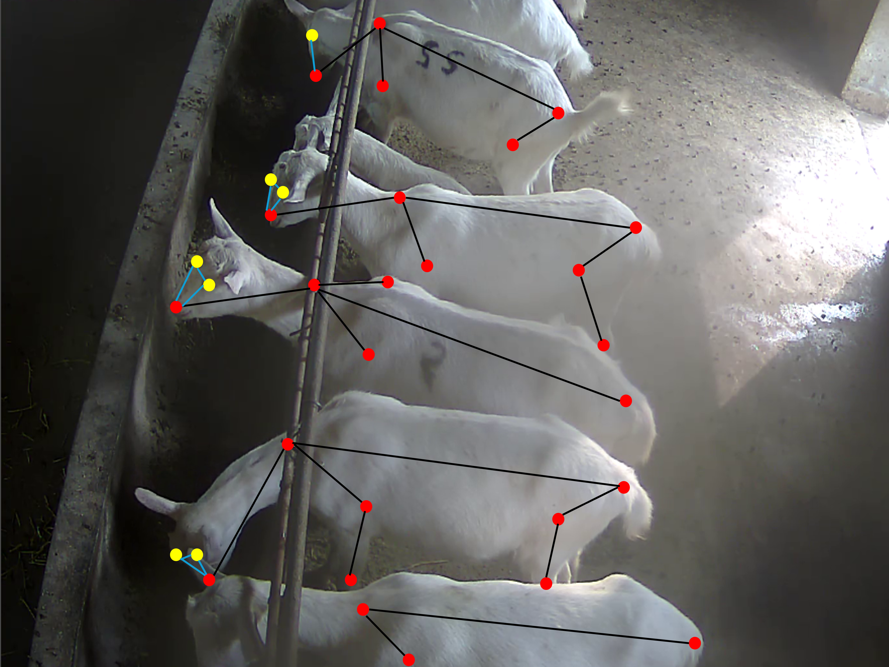
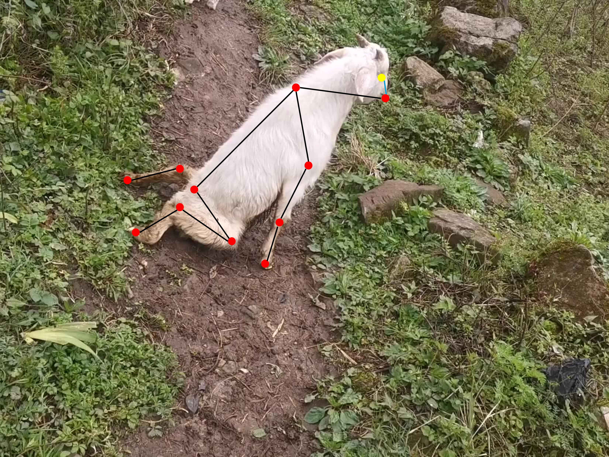
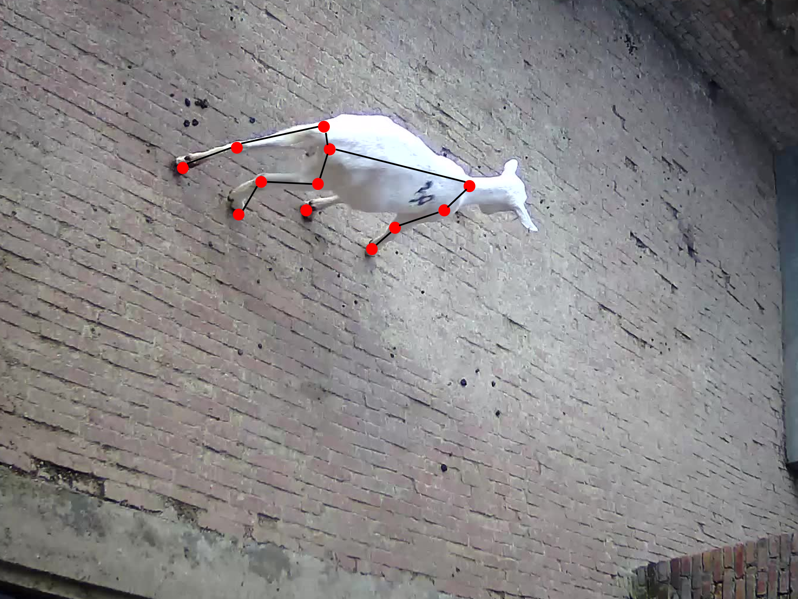
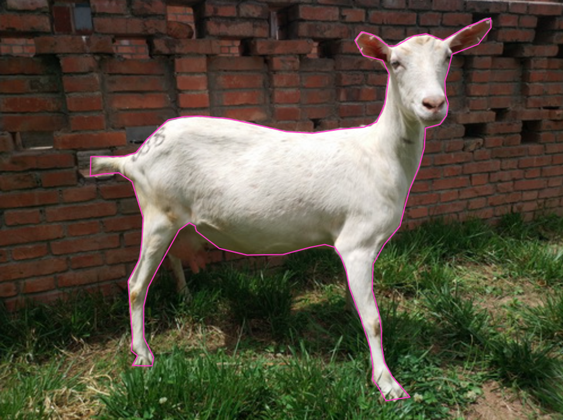
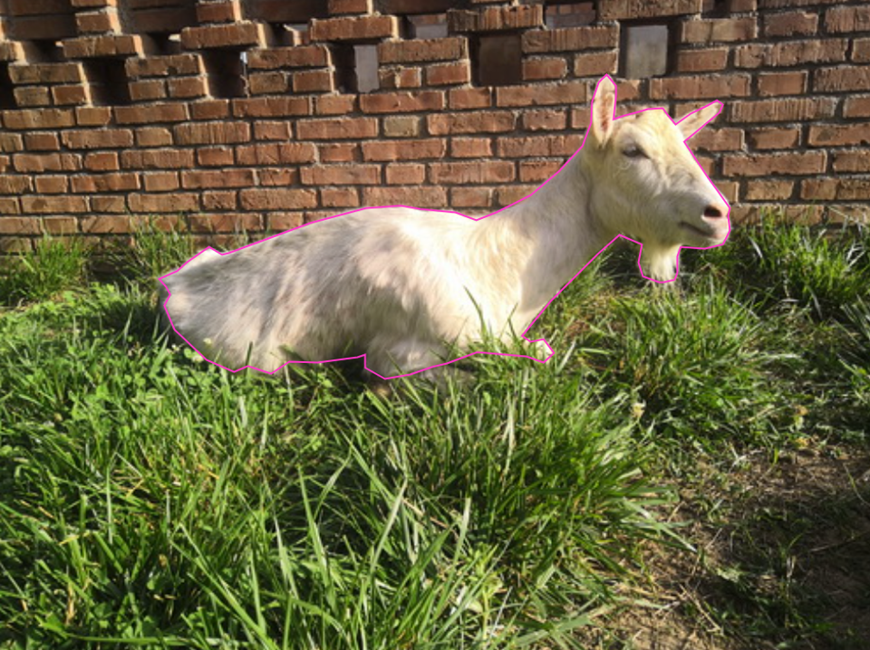
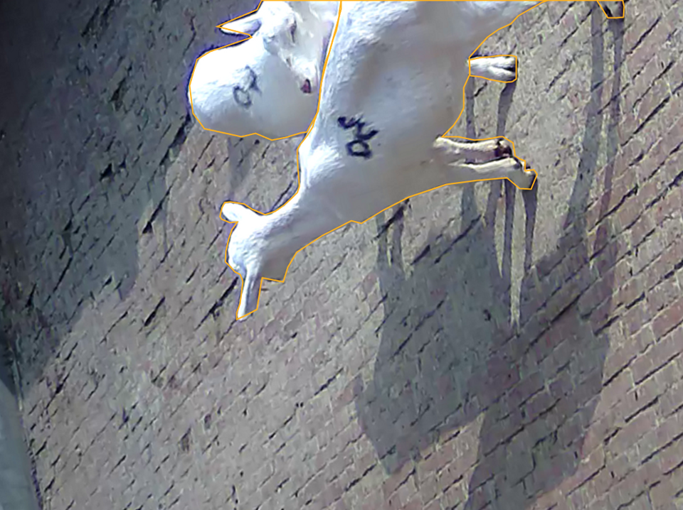
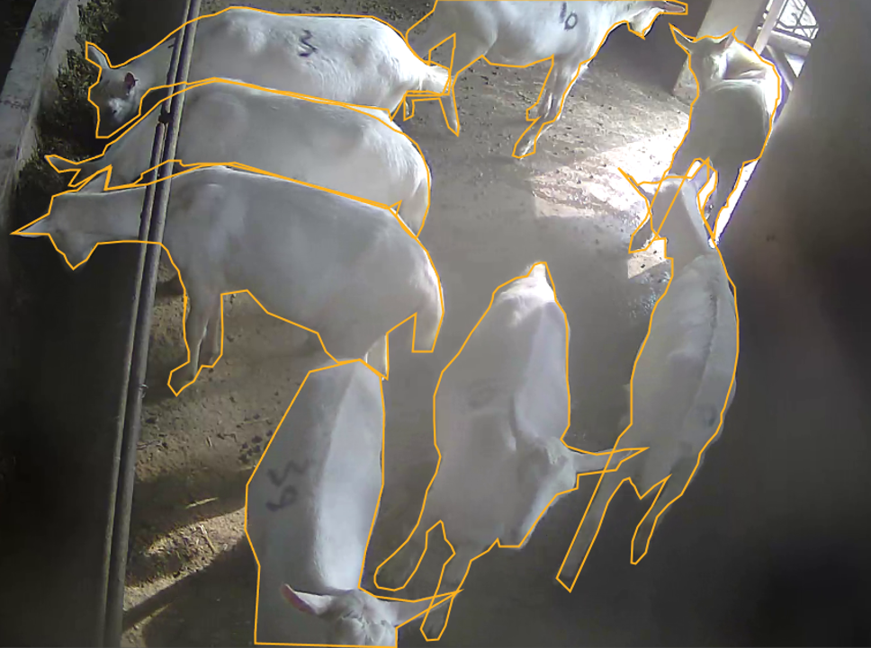
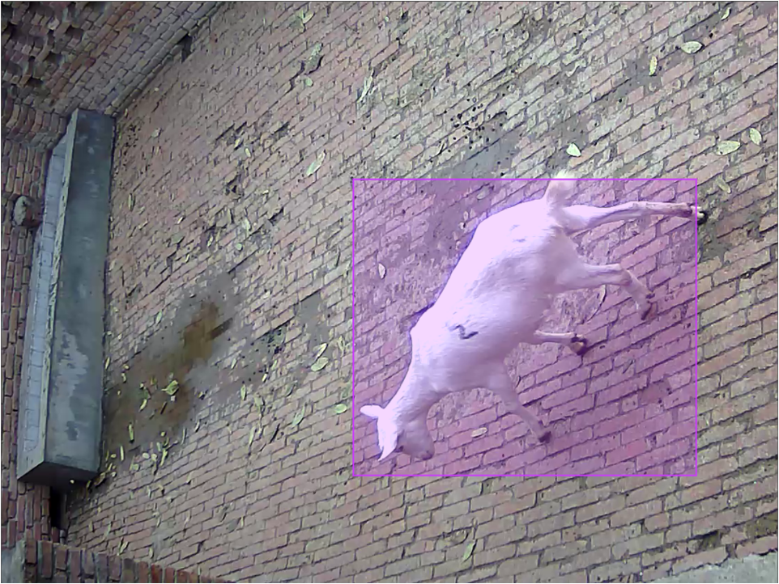
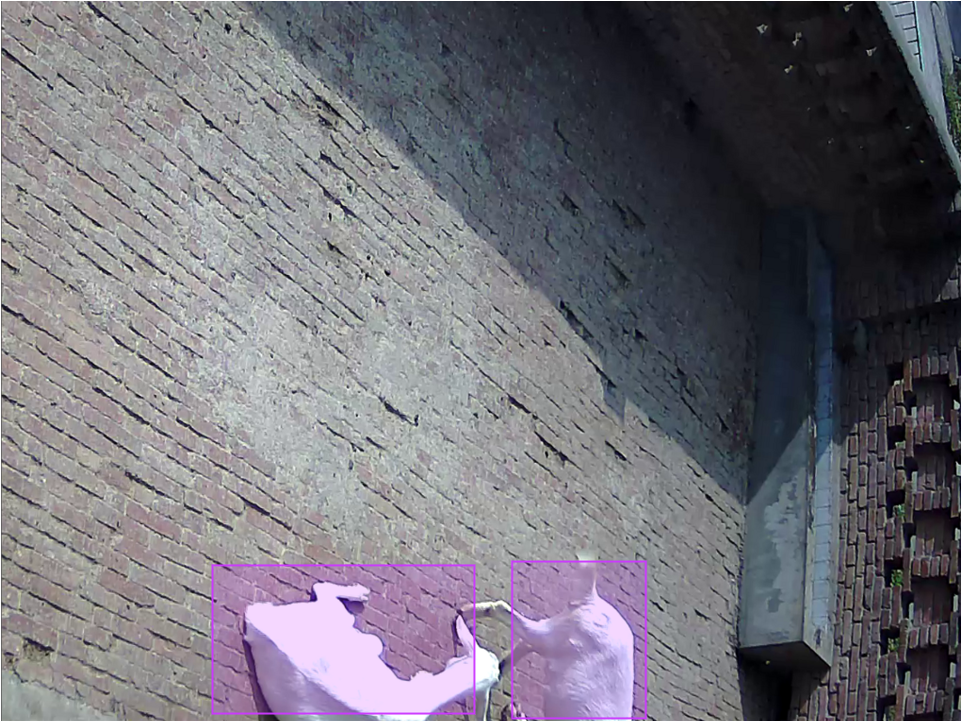
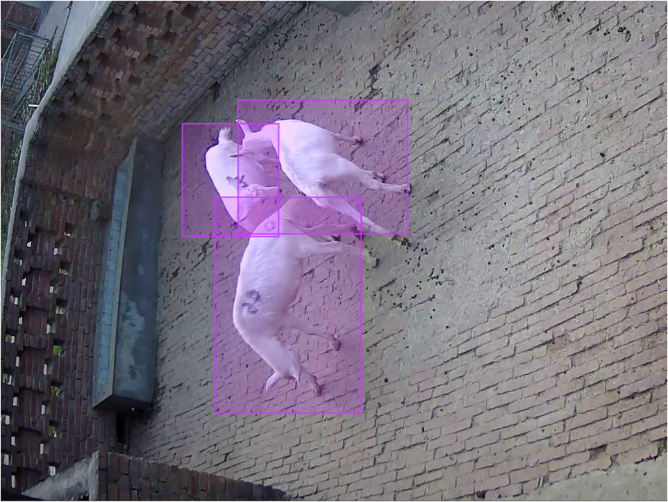
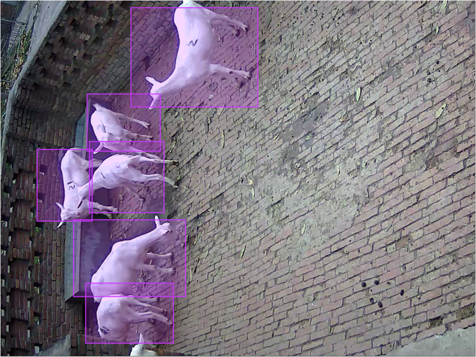
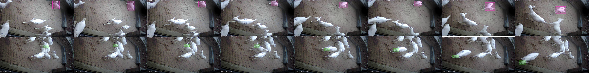
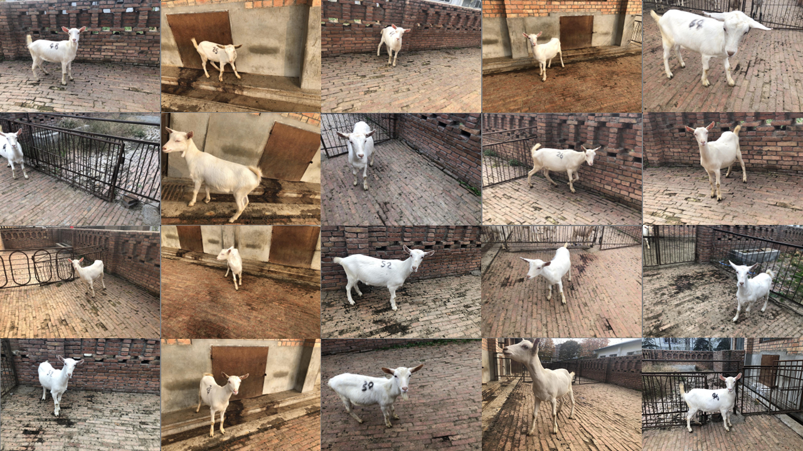
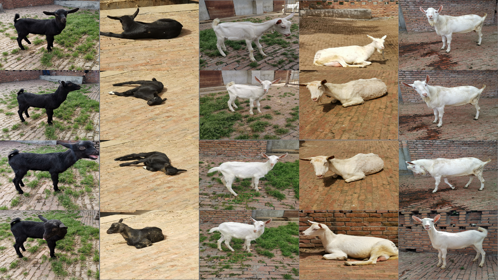
Benchmark Results
Benchmark Protocol
All six supervised tasks adopt a unified 7:1:2 train/val/test split. Model checkpoints are selected according to validation performance, early stopping is applied when the validation metric no longer improves, and all final results are reported on the test set.
Evaluation Metrics
Detection, instance segmentation, and pose estimation are evaluated by AP/AP50/AP75. Semantic segmentation uses mIoU/mDice/mPA, behavior recognition uses mAP/mAcc/F1, and tracking uses EAO/Success/Speed.
Observations
YOLOv11 leads object detection, YOLOv12-Seg leads instance segmentation, DeepLabV3+ performs best in semantic segmentation, ELSlowFast-LSTM achieves the highest mAP for behavior recognition, and ODTrack obtains the highest EAO for tracking.
Object Detection
| Method | Backbone | AP | AP50 | AP75 |
|---|---|---|---|---|
| Faster R-CNN | r50 | 0.5555 | 0.9845 | 0.6819 |
| Cascade R-CNN | r50 | 0.5930 | 0.9765 | 0.6689 |
| FCOS | r50 | 0.5160 | 0.9430 | 0.5090 |
| YOLOv7 | E-ELAN | 0.5994 | 0.9878 | 0.7936 |
| YOLOv11 | C2PSA | 0.6346 | 0.9826 | 0.8023 |
Instance Segmentation
| Method | Backbone | AP | AP50 | AP75 |
|---|---|---|---|---|
| Mask R-CNN | r50 | 0.7913 | 0.9775 | 0.9525 |
| YOLACT | r50 | 0.8107 | 0.9688 | 0.9288 |
| SOLOv2 | r50 | 0.8707 | 0.9899 | 0.9792 |
| YOLOv8-Seg | CSPDarknet | 0.6112 | 0.7991 | 0.6708 |
| YOLOv12-Seg | R-ELAN | 0.8930 | 0.9940 | 0.9884 |
Pose Estimation
| Method | Backbone | AP | AP50 | AP75 |
|---|---|---|---|---|
| HRNet | w32 | 0.9139 | 0.9766 | 0.9454 |
| PVT v2 | b2 | 0.9055 | 0.9750 | 0.9521 |
| RTMPose | CSPNeXt | 0.9145 | 0.9764 | 0.9448 |
| GRMPose | CSPNeXt | 0.9117 | 0.9765 | 0.9550 |
Semantic Segmentation
| Method | Backbone | mIoU | mDice | mPA |
|---|---|---|---|---|
| U-Net | r50 | 0.7462 | 0.7983 | 0.7262 |
| DeepLabV3+ | r50 | 0.7750 | 0.8692 | 0.8618 |
| SegFormer | MiT | 0.7698 | 0.8638 | 0.8597 |
| SegMAN | SegMAN Encoder | 0.7670 | 0.8616 | 0.8578 |
Behavior Recognition
| Method | Backbone | mAP | mAcc | F1 |
|---|---|---|---|---|
| I3D | r50 | 0.7690 | 0.7019 | 0.6890 |
| SlowFast | r50 | 0.7103 | 0.6935 | 0.6829 |
| TimeSformer | ViT | 0.7710 | 0.7026 | 0.6890 |
| VideoMAE v2 | ViT | 0.8091 | 0.7294 | 0.7256 |
| ELSlowFast-LSTM | r50 | 0.8195 | 0.7195 | 0.7012 |
Object Tracking
| Method | Backbone | EAO | Success | Speed |
|---|---|---|---|---|
| SiamRPN++ | r50 | 0.2489 | 0.6401 | 33fps |
| STARK | r50 | 0.2681 | 0.8037 | 25fps |
| SeqTrack | ViT | 0.2732 | 0.7945 | 21fps |
| ODTrack | ViT | 0.2893 | 0.8102 | 23fps |